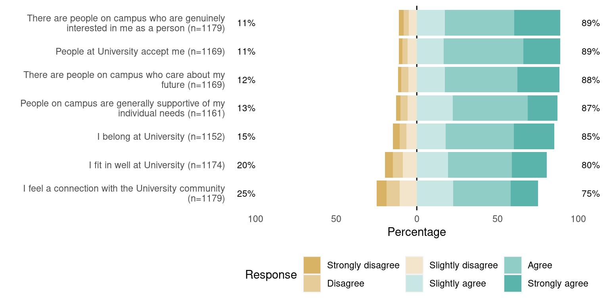
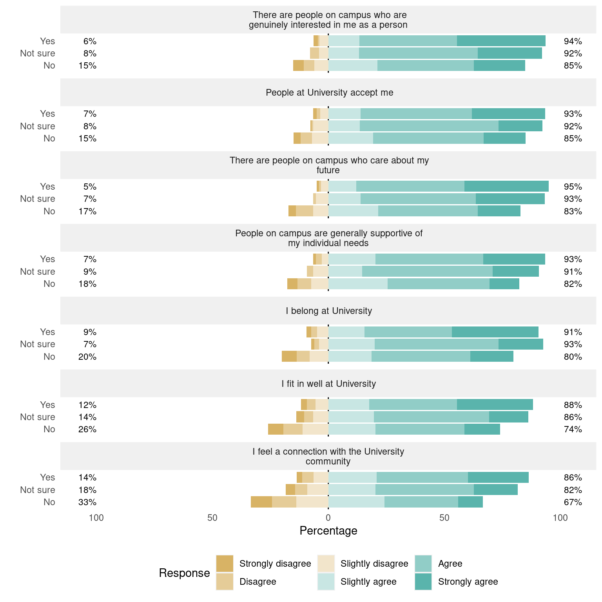
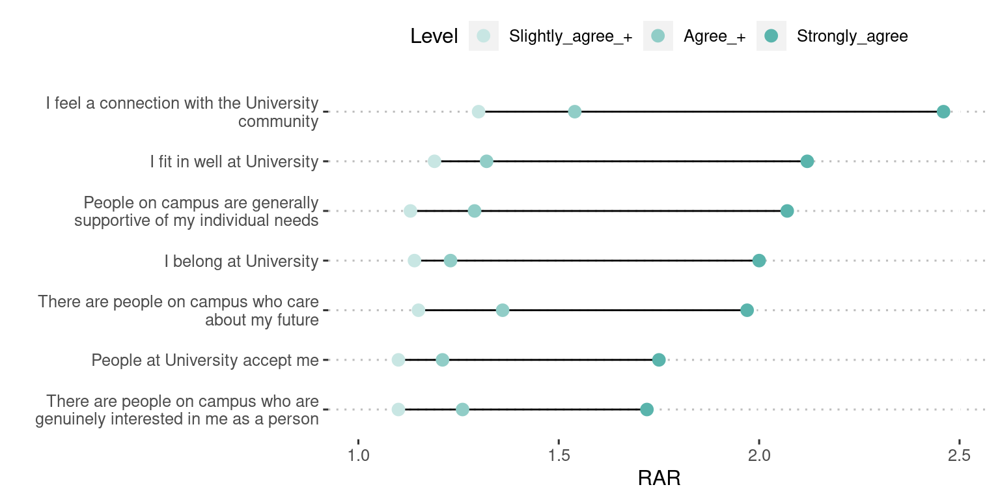

| Belonging Items |
|---|
| I belong at University |
| I fit in well at University |
| People at University accept me |
| I feel a connection with the University community |
Having a Mentor Improves Feelings of Belonging and Mattering for First Year Unversity Students
Analysis of a University End of First Year Survey
Introduction
This report is an analysis of data from the 2022 End of First Year Survey administered by a public, four-year university. The survey population includes all new first-year/first-time and transfer students and asks them about numerous aspects of their academic and co-curricular experiences including their sense of belonging and mattering, which will be the focus of this analysis.
The goals for this analysis are:
- Provide an overall summary of responses to each of the 7 belonging and mattering items.
- Summarize survey response differences based on whether or not a student has a mentor (yes vs no).
Summary of Findings
- Belonging items get lower ratings than mattering items - The ratings for items that start with “I…” (I belong, I fit in, I feel a connection) and reference the institution (University/University community) are lower than items that reference how other people/people on campus view the respondent.
- Having a mentor improves feelings of belonging and mattering - Students who indicated they have a mentor are 5% to 39% more likely to give a rating of Slightly agree or higher (Slightly agree+) to the belonging and mattering items compared to respondents who indicated they do not have a mentor. Students with a mentor gave higher ratings for all belonging and mattering items, but the effect was most pronounced for the item I feel a connection with the University community, for which students with a mentor were 21% to 39% more likely to give a rating of Slightly agree+ compared to students without a mentor. Students with a mentor were 1.4 to 3.25 times more likely to give a Strongly agree response across all items, and 1.9 to 3.25 times more likely for the item I feel a connection with the University community.
Belonging and Mattering Items
The belonging and mattering items are shown below. In the survey, each of these is prefaced with Please indicate your level of agreement with each of the following statements and respondents indicated their agreement using the following response options: Strongly disagree, Disagree, Slightly disagree, Slightly agree, Agree, Strongly agree. The original rationale for dividing these items into belonging and mattering groups was not available as part of this analysis. The term ‘University’ replaces the actual name of the university for this report.
Three of the four belonging items start with “I” and reference how the respondent feels in relation to the institution (“University”/“University community”). Interestingly, the next to last item is worded more like the mattering items below, which all reference the attitudes of other “people on campus” toward the respondent. However, the belonging item does reference “People at University” rather than “people on campus”. So, the most obvious difference between the belonging and mattering items is how the respondent feels in relation to the institution “University”/“University community” (belonging, fit, connection, acceptance) vs how “people on campus” (presumably not the institution) feel about the respondent (caring, interested, supportive).
| Mattering Items |
|---|
| People on campus are generally supportive of my individual needs |
| There are people on campus who are genuinely interested in me as a person |
| There are people on campus who care about my future |
Results
This section provides evidence that respondents who report having a mentor are more agreeable to the belonging and mattering items than those who do not. Being more agreeable means being more likely to give one of the agree responses (Slightly agree, Agree, Strongly agree). We’ll look at agreeableness in three ways: Slightly agree+ refers to giving a response of Slightly agree or higher; Agree + means giving a response of Agree or Strongly agree and Strongly agree refers to a response of just that highest category. We’ll also see that the relative advantage of having a mentor vs not increases with each of those successive categories. We’ll refer to all the disagree responses collectively as Slightly disagree- (Slightly disagree, Disagree, Strongly disagree).
Summary of responses to the belonging and mattering items
Figure 1 shows the percentage of respondents who chose each response category for the seven belonging and mattering items, sorted from highest to lowest total percentage of Slightly agree+ responses. The percentages at the end of each bar are the total percentage of Slightly disagree- responses (left) or Slightly agree+ (right) responses. The item labels (y-axis labels) show the number of respondents for each item, which was greater than 1100 in all cases. The items can be thought of as falling into 3 statistically reliable groups in terms of the total percentage of Slightly agree+ responses: Those greater than 85% Slightly agree+ responses, which include all of the “people” items; those equal to 85% Slightly agree+ responses (the “I belong…” item); and those that are below 85% Slightly agree+ responses (the fit and connection items).

Based on Figure 1, lower ratings were less the result of how other people on campus view the respondent than the feelings of fit and connection with respect to the institution (University/University community). We will see in the next section that having a mentor leads to higher ratings for all of the belonging and mattering items and most strongly for the item I feel a connection with the University community.
Having a mentor improves feelings of belonging and mattering compared to not having a mentor
Figure 2 shows responses to the belonging and mattering items segmented by responses to the question Do you have someone at University you consider a mentor? which had response options Yes (33%, n=458), Not sure (13%, n=178) and No (54%, n=743). The belonging and mattering items are in the same order they were in Figure 1.
For respondents that have a mentor, the percentage of Slightly agree+ responses is greater than 85% for all items, including the connection and fit items, which were 75% and 80%, respectively, overall (see Figure 1). The connection and fit items have the lowest percentage of Slightly agree+ responses and the highest percentage of Slightly disagree- responses for all of the mentor question response categories. Interestingly, the Not sure category for the mentor question is much closer to the Yes category than to the No category in terms of percentage of Slightly agree+ responses.

The statistical significance of the advantage of having a mentor compared to not having a mentor was confirmed in three different ways.
- A proportional odds ordinal logistic regression was performed for each belonging and mattering item, predicting those responses based on the responses to the mentor question. Those tests confirm that, for all questions, both mentor = Yes and Mentor = Not sure respondents were more agreeable than Mentor = No respondents, p < .0001.
- For each item in Table 1, a single degree of freedom \(\chi^2\) test confirmed that the percentage of Slightly agree+ responses for those with a mentor was greater than for those without, p < .0001. Similar tests were performed for Agree+ and Strongly agree responses and confirmed the advantage of having a mentor. Those tables, Table 2 and Table 3, are shown in the Appendix.
- Table 1 shows the relative agreement ratio (RAR), the ratio of the percentage of Slightly agree+ responses for those with and without a mentor, along with the upper and lower bounds for the 95% confidence interval for the RAR. If the RAR confidence interval does not contain 1 (a ratio of 1 means two percentages are equal), then the ratio shows a statistically significant advantage, which is true for all of the belonging and mattering items. Similar tests were performed for Agree+ and Strongly agree responses and confirmed the advantage of having a mentor for those response categories (see Table 2 and Table 3).
| Item | Mentor Slightly agree+ | No mentor Slightly agree+ | Relative agreement ratio (RAR) | RAR lower bound | RAR upper bound |
|---|---|---|---|---|---|
| I feel a connection with the University community | 86.4 | 66.6 | 1.3 | 1.21 | 1.39 |
| I fit in well at University | 88.2 | 74 | 1.19 | 1.12 | 1.26 |
| There are people on campus who care about my future | 95 | 82.8 | 1.15 | 1.1 | 1.2 |
| I belong at University | 90.7 | 79.9 | 1.14 | 1.08 | 1.19 |
| People on campus are generally supportive of my individual needs | 93.5 | 82.4 | 1.13 | 1.08 | 1.19 |
| There are people on campus who are genuinely interested in me as a person | 93.7 | 84.9 | 1.1 | 1.06 | 1.15 |
| People at University accept me | 93.4 | 85 | 1.1 | 1.05 | 1.15 |
The relative agreement ratio (RAR) shown in Table 1 is the ratio of the percent Slightly agree+ for those with a mentor to the percent Slightly agree+ for those without a mentor (more info on percentage ratios). The percent Slightly agree+ are the same values, to one more decimal place, shown in Figure 2. The RAR for the first item is 1.3 and can be interpreted as “respondents with a mentor are 30% more likely to give a rating of Slightly agree+ (21% to 39%) than those without a mentor to the item I feel a connection with the University community”. The (21% to 39%) comes from the lower and upper bounds for the 95% confidence interval for the RAR. Looking at the ranges for all of the confidence intervals we could say that those with a mentor are 5% to 39% more agreeable than those without a mentor across all of the items.
Table 1 is sorted by descending RAR to provide an indication of the relative advantage for having a mentor. So, having a mentor shows the largest advantage for the item I feel a connection with the University community. The item order also follows the ascending values for percent Slightly agree+ for the mentor = No condition, with one exception: There are people on campus who care about my future. The RAR sorted this item into third place, whereas it’s percent Slightly agree+ for mentor = No would have had it third from last.

Figure 3 shows the RAR values for Slightly agree+, Agree+ and Strongly agree response categories sorted by descending Strongly agree RAR. The tables showing confidence intervals for Agree+ and Strongly agree are shown in the Appendix (see Table 2 and Table 3). Figure 3 shows some interesting trends. First, the item I feel a connection with the University community shows the strongest RAR advantage for having a mentor across all three agreement categories. Second, for all items, the advantage of having a mentor grows from Slightly agree+ through Strongly agree. Respondents are almost 2.5 times more likely (1.9 to 3.25) to choose Strongly agree when they have a mentor compared to not for the question I feel a connection with the University community.
Discussion and Next Steps
Respondents who report having a mentor are more agreeable to the belonging and mattering items than those who do not have a mentor. That was true when agreeableness was defined as Slightly agree+, Agree+ or Strongly agree. The greater agreeableness for those with a mentor vs no mentor was confirmed with three different statistical approaches; proportional odds logistic regression, single degree of freedom \(\chi^2\) tests on percentage differences, and relative agreement ratio (RAR) 95% confidence intervals not containing 1.
The effect of having a mentor on belonging and mattering item ratings differs across the items. Figure 3, Table 1, Table 2 and Table 3 show that the item I feel a connection with the University community always showed the biggest effect of having a mentor, but the relative ranking of the other items differed depending on which agreeableness metric was used. Despite those differences, responses to the survey items are highly intercorrelated and even though they produce different levels of agreement and having a mentor affects them differently, the responses tend to move together, so future work should consider examining if they are part of a single construct. If so, that would allow a meaningful single number metric to be tracked and presented in dashboards and other reports.
This report only examined the effect of having a mentor. Future analyses will examine other factors like being a transfer student, which college the respondent is in, and the race of the respondent.
One puzzling aspect of this data is that those who responded “Not sure” to the mentor question are almost as agreeable as those who responded “Yes”. Does “Not sure” mean that it is in process but they just haven’t gotten final notification? It would be interesting to do qualitative follow up on that question.
Appendix
| Item | Mentor Agree+ | No mentor Agree+ | Relative agreement ratio (RAR) | RAR lower bound | RAR upper bound |
|---|---|---|---|---|---|
| I feel a connection with the University community | 65.5 | 42.4 | 1.54 | 1.37 | 1.73 |
| There are people on campus who care about my future | 83 | 61.3 | 1.36 | 1.26 | 1.46 |
| I fit in well at University | 70.6 | 53.6 | 1.32 | 1.2 | 1.45 |
| People on campus are generally supportive of my individual needs | 73 | 56.8 | 1.29 | 1.17 | 1.41 |
| There are people on campus who are genuinely interested in me as a person | 80.4 | 63.8 | 1.26 | 1.17 | 1.36 |
| I belong at University | 75 | 61.2 | 1.23 | 1.13 | 1.33 |
| People at University accept me | 79.4 | 65.7 | 1.21 | 1.12 | 1.3 |
| Item | Mentor Strongly agree | No mentor Strongly agree | Relative agreement ratio (RAR) | RAR lower bound | RAR upper bound |
|---|---|---|---|---|---|
| I feel a connection with the University community | 26.2 | 10.7 | 2.46 | 1.86 | 3.25 |
| I fit in well at University | 32.7 | 15.4 | 2.12 | 1.68 | 2.67 |
| People on campus are generally supportive of my individual needs | 26.7 | 12.9 | 2.07 | 1.59 | 2.69 |
| I belong at University | 37.4 | 18.6 | 2 | 1.63 | 2.47 |
| There are people on campus who care about my future | 36.4 | 18.5 | 1.97 | 1.6 | 2.43 |
| People at University accept me | 31.5 | 18 | 1.75 | 1.4 | 2.18 |
| There are people on campus who are genuinely interested in me as a person | 38.3 | 22.2 | 1.72 | 1.42 | 2.09 |